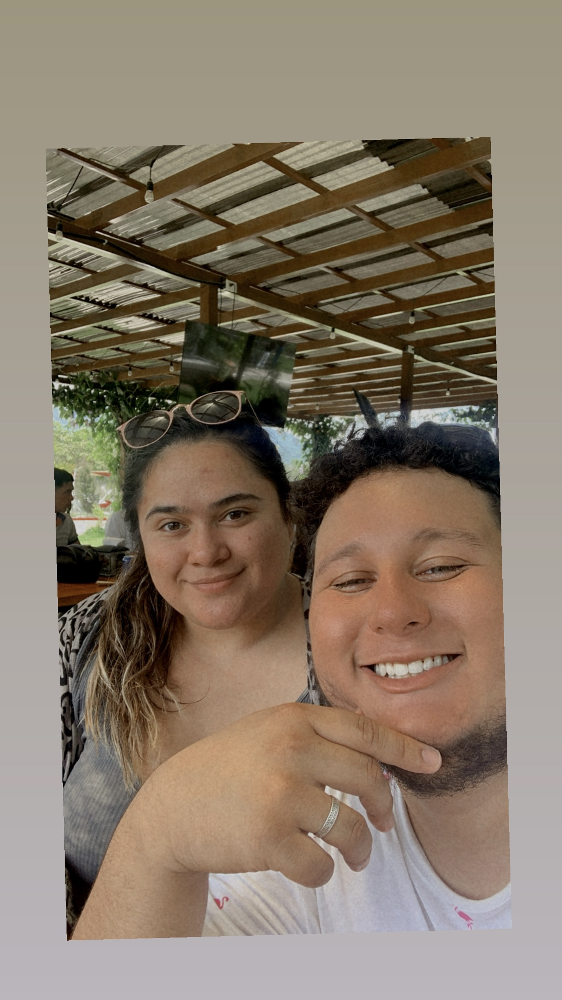

- I was only 20 years old when I got married to a beautiful woman from Guatemala.
- I am actually from the United States. Born and raised there and left to live with
my wife since April 11th, 2022.
- I love to play instruments. My favorite instrument has to be the drums but currently,
I haven't leanred them. I actually know how to play the guitar, bass, and a little bit
of piano. I want to fluently learn piano and then move to my next insturment
which is drums.
- I am part of my worship team at chruch and me and my wife are president and
vice president together. Though I'm the president, some times it feels like
my wife more suitted for president.
- WE LOVE TO TRAVEL!! We love going anywhere. Every year we go to Decameron,
El Salvador. We went there for our honey moon and haven't stopped going every year.
- I love to play sports though I don't watch a lot of Sports, I want to get more into it.
My favrotie sport has to be Football. (Yes it's soccer, but we have to say it the proper
way.) I'm not saying I'm Messi but I love to be defender.
- My brithday is on November 6th, 2001.
- I love to play video games. It's my favorite activity outside of work and spending
time with my wife. I love playing shooters for the action and fast paced activities
or just relax playing some Minecraft with some lofi beats in the background while
I strip mine.